Wypady po łup
Zbieraj asteroidy, kontenery, złom po przeciwnikach i rzadkie przedmioty, a potem dowieź je do ekstrakcji.
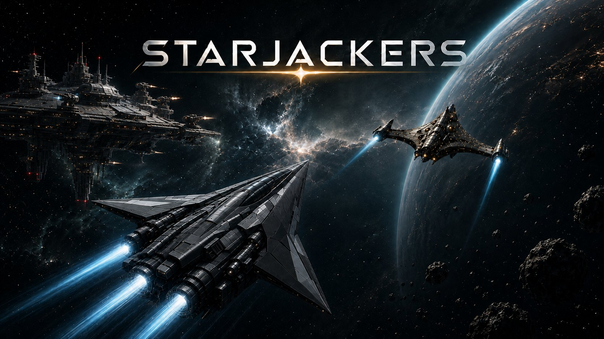
Android alpha v0.81
Wejdź w sektor, zgarnij ładunek, przetrwaj piratów i uciekaj zanim kosmos zabierze wszystko, co właśnie zdobyłeś.
Loot, ryzyko, ucieczka
STARJACKERS łączy szybką kosmiczną akcję z progresją opartą o cargo, schematy, crafting i misje projektowe. Zaczynasz skromnie, ale każdy wrak, minerał i piracka skrzynia może zmienić kolejny wypad.
Im głębiej lecisz, tym mocniejsze są nagrody i tym boleśniejsza porażka. Deep Space, Pirate Bay, Toxic Area czy Gravity Well nie wybaczają chciwości.
Zbieraj asteroidy, kontenery, złom po przeciwnikach i rzadkie przedmioty, a potem dowieź je do ekstrakcji.
Explorer, Viper, Avenger, Arrow, Invader, BISON i Pathfinder mają własny rytm, sloty, cargo i styl ryzyka.
Odblokowuj schematy, zbieraj blueprint scrap i rozwijaj projekty takie jak Space Mayhem, Omerta czy Alien Secrets.
Z gry
Hangar
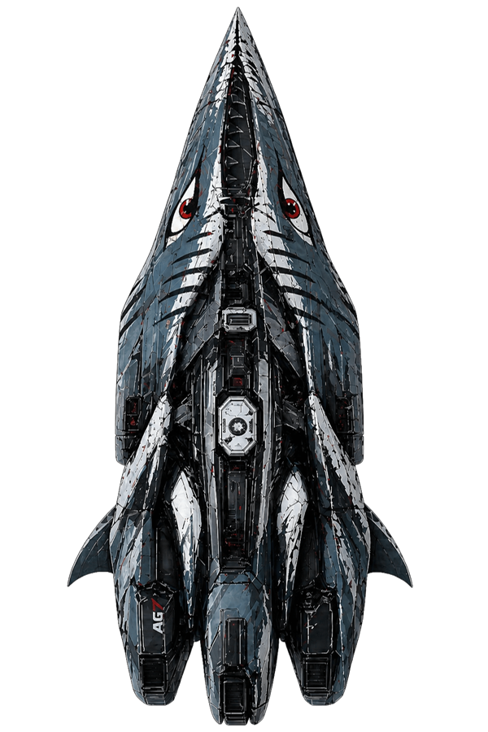
Szybki, lekki, stworzony do ostrych wejść i jeszcze szybszych ucieczek.
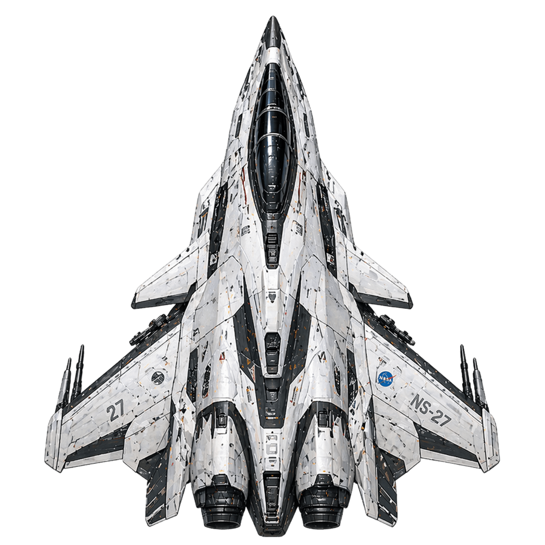
Wojskowy charakter, solidna ochrona i miejsce na uzbrojenie dla agresywnego stylu gry.
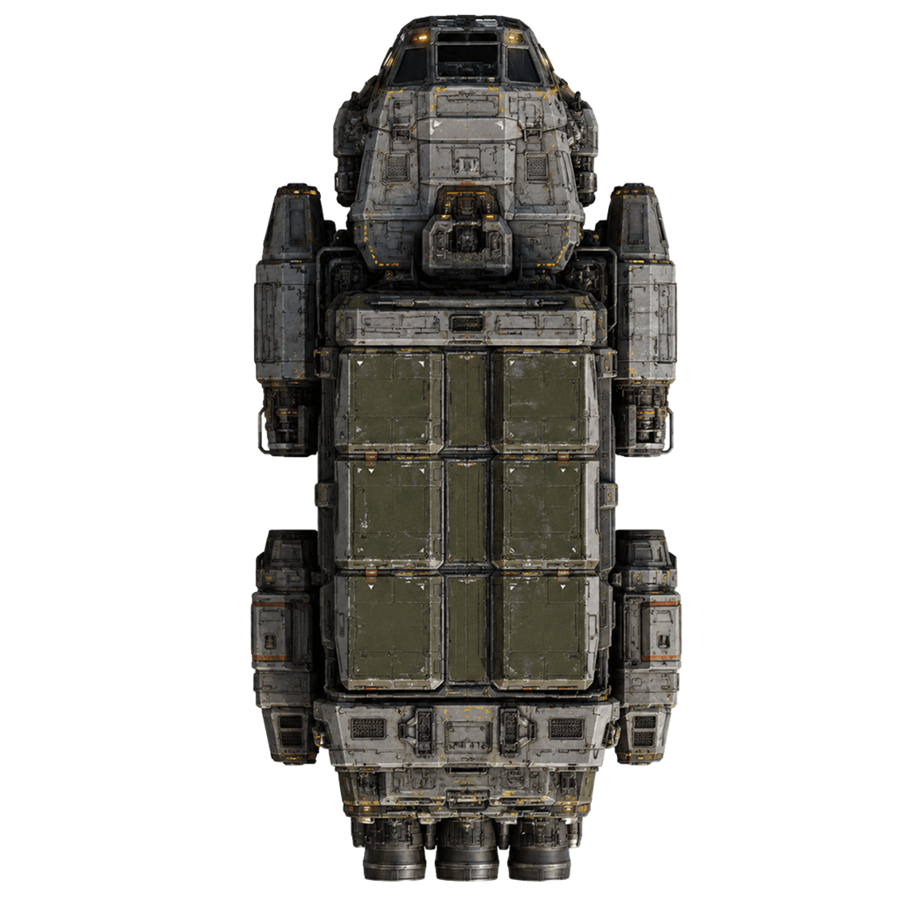
Ciężarówka kosmosu. Więcej cargo, więcej łupu, więcej powodów, żeby nie zginąć.
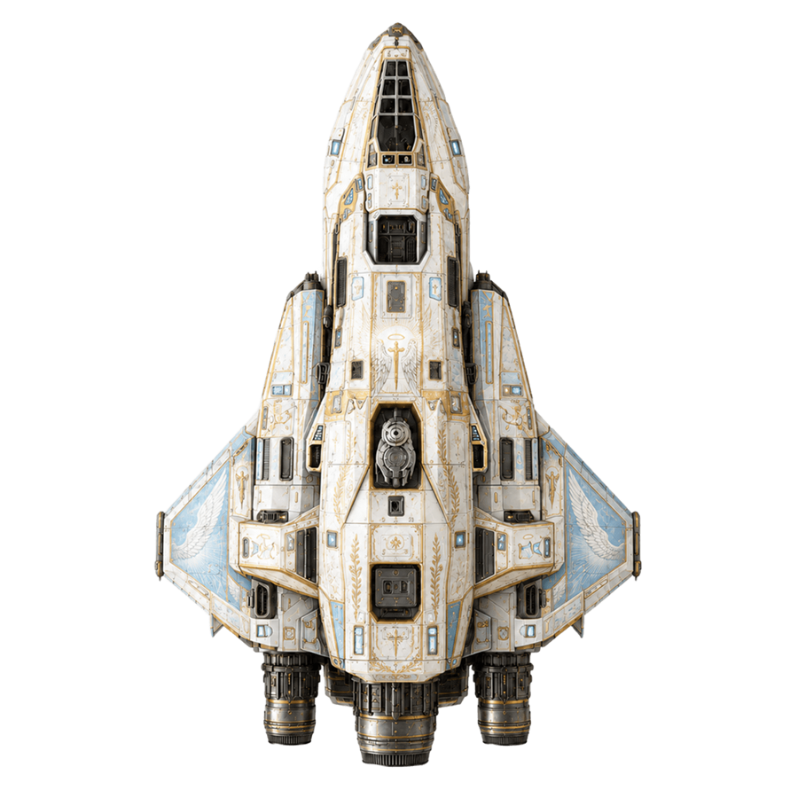
Zwrotny zwiadowca pod misje specjalne, skanowanie i precyzyjne wejścia w trudne sektory.
Wyposażenie
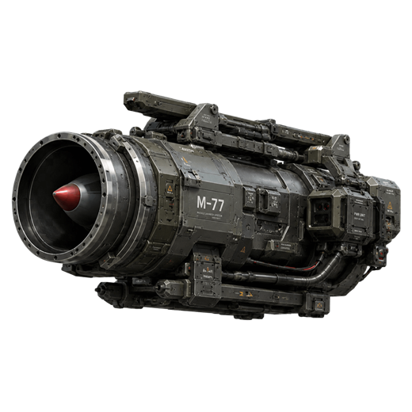
Rakiety z namierzaniem dla celów, które nie chcą stać spokojnie.
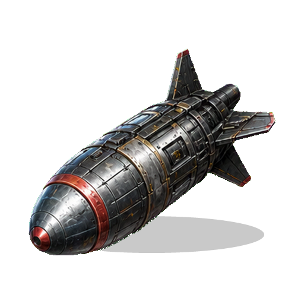
Szybki strzał z nosa statku i kompaktowy wybuch przy trafieniu.
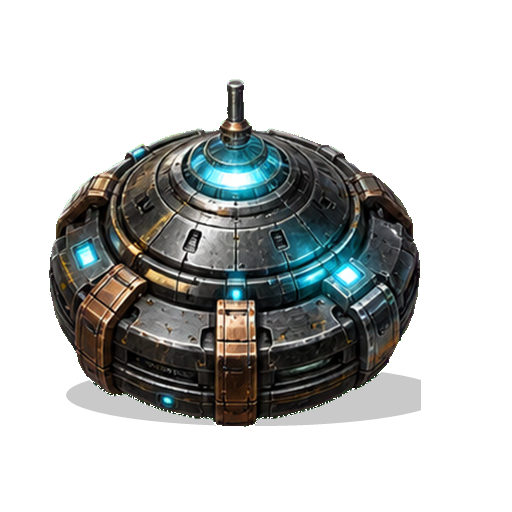
Puls spowalniający wrogów i ich broń, gdy robi się zbyt ciasno.
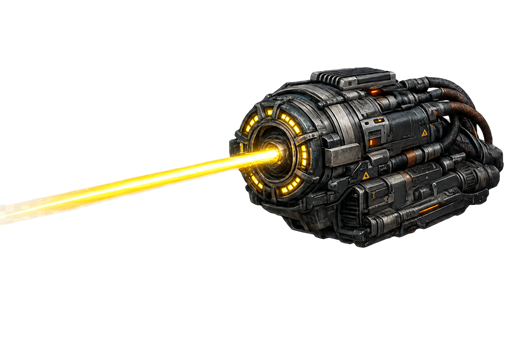
Przyciągaj łup i holuj obiekty, kiedy droga do ekstrakcji jest krótka.
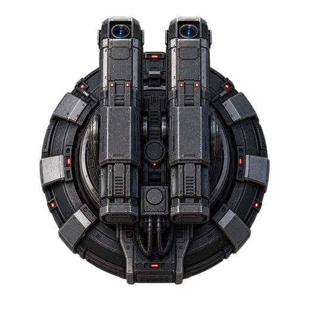
Rozstaw wieżyczkę, która osłoni plecy w trakcie rabunku.
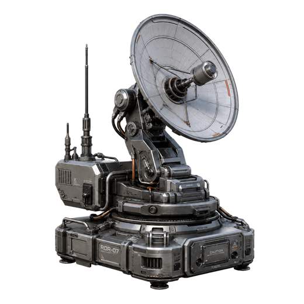
Sygnał prowadzący do ukrytych skarbów i lepszych decyzji w locie.
Sektory i zagrożenia
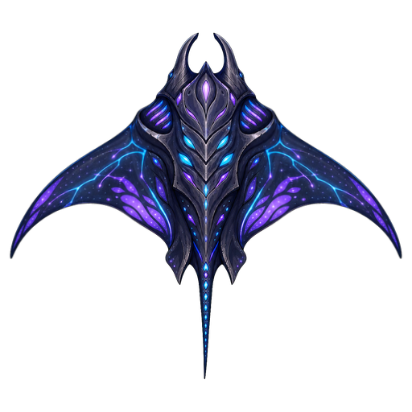
Na trasie czekają Pirate Fighters, Hunter Lance, Radar Ship, Space Manta, Gravity Squid, Pirate Base, Mothership, Cosmic Worm i Rift Warden. Każdy sektor dokłada własny zestaw problemów.
Projekt na GitHubie
Kod strony żyje w katalogu docs, więc można ją opublikować bez osobnego frameworka i bez procesu builda.